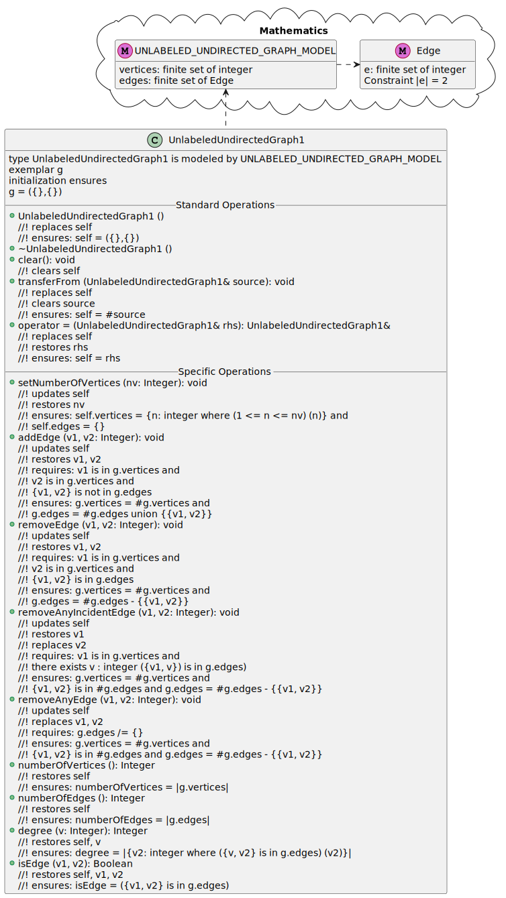

Project M1
1. ProjM1 Statement of Work
1.1 Create a new folder subordinate to components\include
- In the folder csse373devenv202230-yourUserID\components\include create a new folder called: UnlabeledUndirectedGraph
- Copy the file QueueOfText.hpp from components\include\Queue\ to UnlabeledUndirectedGraph folder you just created
- Rename this copied file to UnlabeledUndirectedGraph1.hpp
- Note: Alternatively you could start with a blank .hpp file and do this assignment.
But the recommended approach is to start with
a syntactically correct .hpp (e.g., QueueOfText.hpp) and morph it to a completed syntactically correct UnlabeledUndirectedGraph1.hpp
1.2 Initial edits to UnlabeledUndirectedGraph1.hpp
- Delete code in the 'private: // Representation' part
- Delete code in the 'private: // Local Operations' part
- Comment out the code in the 'private: // Disallowed QueueOfText Operations' part
- Comment out all the operation implementations starting with the first one QueueOfText::countNodes and proceeding to the end of the file
1.3 Continue editing UnlabeledUndirectedGraph1.hpp
- Use the UML diagram (shown below) for UnlabeledUndirectedGraph1 to create the C++ headers for all of UnlabeledUndirectedGraph1's operations
- That is, provide syntactically correct headers for all the:
- Standard Operations
- Specific Operations
- For M1 do not provide:
- an internal representation
- any operation implementations

2. UnlabeledUndirectedGraph1.hpp Must Be
- #include'able - When a client program #include's your UnlabeledUndirectedGraph1.hpp the preprocessor must find it in the correct components\include folder
- Buildable - a client program that correctly #includes UnlabeledUndirectedGraph1.hpp, delcares variables from class UnlabeledUndirectedGraph1,
and calls any/all public operations from the class must build correctly in both Release and Debug configurations
4. Submitting the Assignment for Grading
- Follow VS2020 instructions for committing and pushing your completed UnlabeledUndirectedGraph1.hpp and its containing folder to your GitHub Education CSSE373 repo
- Use the commit message "ProjM1, ready for grading"